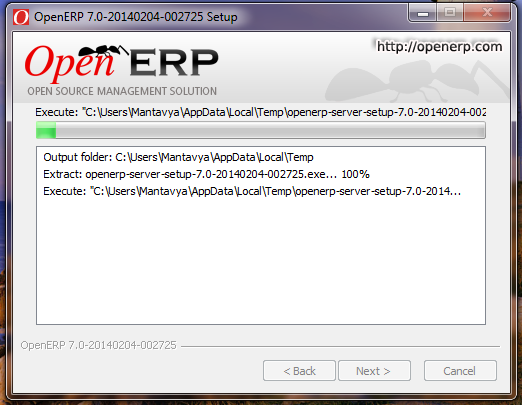

Install OpenERP on Windows 7 or 8 or Server 2008¶
Installation of OpenERP on windows platform is very easy compare to any other operating system like Ubuntu or Fedora of Mac OSX. You just need to select the correct installer from the OpenERP’s website.
You can use OpenERP on windows platform to test it locally or may be for the onsite demonstration. Once you download the correct version from the OpenERP’s download page. You are ready to start the installation process.

Installer
Choose Language¶
Start the Installer, make sure that you are installing from Administrator account or right click and run as Administrator.

Choose Language
Select the Language you would like to choose as your preferred language and Proceed to the next stage and start installation.

Start Installation
Choose Software to Install¶
If have have not install PostgreSQL Database OpenERP All in One Installer will detect and ask you to install the PostgreSQL database during the installation process.

Software Selection
PostgreSQL Configuration¶
You need to supply configuration for the PostgreSQL server installation like Host, Port for Database server. Installer will also create windows user which use the to connect to the Database Server to use the Database. keep remember those settings or change accordingly.

PostgreSQL Database configuration
Next you have to choose the path for the Installation of OpenERP server. Keep it as it is if your software installations directory is different then the available.

Installation Path
Click next to start the Installation, rest will be done automatically by the OpenERP Installer.
Installation Process
PostgreSQL Installation¶
Middle of the installation process Installer may install some of the windows patch which required to install PostgreSQL Server and then Installation of PostgreSQL will begin in popup window.

PostgreSQL Installation
On completion of installation of PostgreSQL, the installation of OpenERP finished, windows will start both services OpenERP Server and PostgreSQL service and you are ready to create your first database on windows.